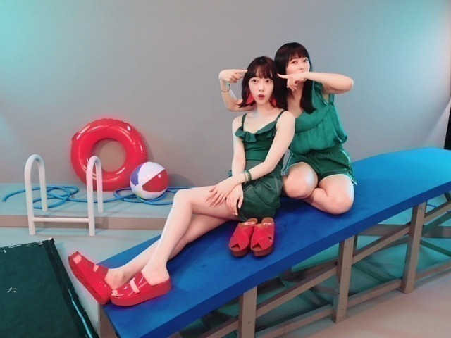
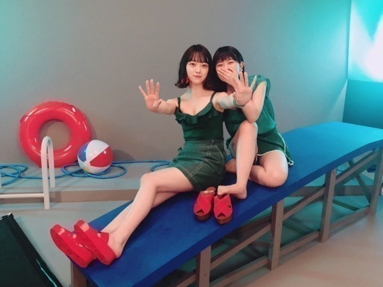

2018/0801Wed甘すぎないがちょうどいい
こんばんは
今日は レコメン前に蘭世とお買い物して
アップルパイ食べて、バイバイして
みり愛と絢音と合流して
プリン会でコードブルー観てきました
濃い一日！！！
蘭世と同じブランドのリュック柄違いで買ったんだ〜
アウトレットも行きたいねって話してた♪
服の趣味合うし話も合うし、あ、食も。
蘭世との買い物楽しいから好きやわ〜
あ、果たして親知らず抜きたての堀はアップルパイを食べれたのか。そこ、気になりますよね。笑
甘党じゃないけどアップルパイは小さい頃から好きで
よく白雪姫のアップルパイ作るシーン
繰り返し見てたなぁ。
で、やはり想像以上に左頬が腫れてしまい
顔が真四角なのでチマチマゆっくり食べました笑
甘酸っぱくて美味しかった〜
あ、あと途中でね、
美味しそうなパン屋さんを発見して、
あ！パンだ！！って大はしゃぎしてたら
蘭世に未央奈といえばパン屋みたいなイメージある
って言われて。笑
たしかに私の家族がパン大好きだから見つけたら
必ず大量買いしてるの。
よく見てるなあ〜って
さすがです！
いつかパン屋で働いてみたい〜

撮影終わりのすっぴん。笑
しっかりとした洋服も好きだし
パーカーも好きです。
8/9 に表紙のBOMBが発売されます！
美月とだよ(^_-)
今日のレコメンも22時から3時間生放送で
お送り致しますーー
聞き取りずらかったらごめんなさい...
滑舌悪くても許してね。

甘えん坊で天真爛漫なれんかに
いつも癒されてます♪



かわいいなー！
早くディズニーいこうね！りりあも！
では。
レコメン！22:00〜お聞き逃しなく。
2018/08/01 17:24
コメント(397)
可愛いなあ
未央奈大好き
未央奈大好き
可愛い♪
話題のコードブルーみてきたのか。
みよっかな。
みよっかな。
親知らずの影響かな(^^)
新曲、楽しみにしてます*\(^o^)/*
新曲、楽しみにしてます*\(^o^)/*
未央奈可愛すぎる！！！大好き！！！
いつもブログありがと！！
いつもブログありがと！！
すっぴんでこんなにかわいい子いんの！？
俺のまわりにも現れてくれー
俺のまわりにも現れてくれー
未央奈レコメン聞いてるでー！
すっぴん可愛すぎる！
歯磨きしたら奥からアップルパイ出てくるよ。ラッキーーー
未央奈、俺もアップルパイ好き。
けど、アップルパイより未央奈好き！！！
Bye！！！
けど、アップルパイより未央奈好き！！！
Bye！！！
こんばんは。ブログ更新ありがとうございます。
親知らず抜歯痛そう～。私は抜いた事が無いので、想像を超えた痛さです。昔は虫歯で片方の歯だけで噛むってことはありました。あと私はマクドナルドのアップルパイが好きです。
私はパンよりご飯派ですが、昔、京王線沿線にあるチェーン店「ルパ」の紅茶パンが好きでした。メロンパンの紅茶味と言えばいいのかな？とにかく不思議な味でしたが、大好物でした。
れんたんとの2ショットかわゆいです～。
ではまた。
親知らず抜歯痛そう～。私は抜いた事が無いので、想像を超えた痛さです。昔は虫歯で片方の歯だけで噛むってことはありました。あと私はマクドナルドのアップルパイが好きです。
私はパンよりご飯派ですが、昔、京王線沿線にあるチェーン店「ルパ」の紅茶パンが好きでした。メロンパンの紅茶味と言えばいいのかな？とにかく不思議な味でしたが、大好物でした。
れんたんとの2ショットかわゆいです～。
ではまた。
みおなー、ブログ更新ありがとう！
今度の大阪の全ツ行くからなー
今度の大阪の全ツ行くからなー
蘭世とのユニットも欲しいななんか
プリン会で「おいしいプリン」的な感じの曲欲しいなぁ笑
親知らず大丈夫かあ〜俺もいつかは抜く時がくるのか…
ジャケ写やっぱセクシーや
れんかと仲良いのもいいね
プリン会で「おいしいプリン」的な感じの曲欲しいなぁ笑
親知らず大丈夫かあ〜俺もいつかは抜く時がくるのか…
ジャケ写やっぱセクシーや
れんかと仲良いのもいいね
ブログ更新ありかと〜！
みおちゃんが働くパン屋ならぜひとも行ってみたい！！
すっぴんも可愛すぎ！！！
親知らず、まだまだ大変かもしれないけど、お大事にね！早く良くなることを願ってます(>_<)
週末の大阪公演も楽しみにしてるねっ！
みおちゃんが働くパン屋ならぜひとも行ってみたい！！
すっぴんも可愛すぎ！！！
親知らず、まだまだ大変かもしれないけど、お大事にね！早く良くなることを願ってます(>_<)
週末の大阪公演も楽しみにしてるねっ！
ブログ更新ありがとうね(*^^*)
すっぴんとは思えないほど可愛い写真だよー！Σ（￣□￣;）
自分はまだコードブルー観てないから、早く観たいよー(>_<)
すっぴんとは思えないほど可愛い写真だよー！Σ（￣□￣;）
自分はまだコードブルー観てないから、早く観たいよー(>_<)
堀ちゃん
今日もお疲れ様です
レコメン今聴いてました
0時からしか聴けないのでついさっきから聴いてましたが、ちゃんと聴き取れますよ
火曜日は遅めの昼休憩中でケータイ見てたら755で堀ちゃんが親知らずの抜歯後で痛いとSOSがちょうど来たので、コメントしときましたがお大事にして下さい（色々コメント書いたけど一番は病院に行く事です）
もうすぐ大阪公演もありますので悪化しないように気をつけて下さい
またお体にもお気をつけ下さい
すっぴんとても可愛いです
ナチュラルが一番好きです
暑い日が続きますが8月も頑張ろう！
ありがとうございました
今日もお疲れ様です
レコメン今聴いてました
0時からしか聴けないのでついさっきから聴いてましたが、ちゃんと聴き取れますよ
火曜日は遅めの昼休憩中でケータイ見てたら755で堀ちゃんが親知らずの抜歯後で痛いとSOSがちょうど来たので、コメントしときましたがお大事にして下さい（色々コメント書いたけど一番は病院に行く事です）
もうすぐ大阪公演もありますので悪化しないように気をつけて下さい
またお体にもお気をつけ下さい
すっぴんとても可愛いです
ナチュラルが一番好きです
暑い日が続きますが8月も頑張ろう！
ありがとうございました
未央奈ちゃんブログ更新ありがとう！
自分はこれが初コメントです！
楽しそうですね(ﾉ≧▽≦)ﾉ
未央奈ちゃんのパン屋あったら絶対行く(o^－^o)
すっぴんもマジで可愛いです！
暑さには気をつけて、お仕事頑張ってください‼
自分はこれが初コメントです！
楽しそうですね(ﾉ≧▽≦)ﾉ
未央奈ちゃんのパン屋あったら絶対行く(o^－^o)
すっぴんもマジで可愛いです！
暑さには気をつけて、お仕事頑張ってください‼
ブログ更新ありがとう！！
親知らず抜いたんですねお大事に！！
僕も親知らず抜いたんですけど、痛みが収まるまで何も食べれなかったです
親知らず抜いたんですねお大事に！！
僕も親知らず抜いたんですけど、痛みが収まるまで何も食べれなかったです
未央奈～こんばんは！
ぽてとです！
自分もパン大好きやでー！
一番はクロワッサンが好きかなー
バターの香りがたまらない♪
親知らず治療、お大事にやで。
ぽてとです！
自分もパン大好きやでー！
一番はクロワッサンが好きかなー
バターの香りがたまらない♪
親知らず治療、お大事にやで。
未央奈！(*´꒳`*)
完全に未央奈に甘すぎる私ですけれどもこんばんわ♬
ですけれど最近色々考えて、応援スタイルを少し変えていくことにしました。雰囲気は少しかわりますが今後ともよろしくお願いします。^_^
あ、一応全然タイトルとかは関係なく自己都合ですmm
レコメン聞きながら書いてます。やはりみんなが居ると更に賑やかだし明るくていいですね！まなったんは純粋にトークの腕があるし、美月は意外とガヤ出来るし、なかなかにトークも出来る子ですよね。ラジオもやはりみんなの力を合わせるとパワーアップするんだなって感じました。
未央奈今回ブログの書き方変えたよね？？なんか普通に会話してるかのような感じで、とても未央奈が身近に感じられる良いブログになっている様に感じました！楽しい♬
私も買い物も、アップルパイも好きです。
成る程、未央奈は腫れやすい体質なのかもね。私も経験した時、確かに痛みもありましたが、普通に睡眠はとれましたからね。
とりあえずプニプニした再生中のお肉は繊細なものなので優しくケアして下さい！あれに優しくする事で早く治りますから。
おー。私もパン好きで有名でしたよ！未央奈に負けないくらいだと思います。学生時代1日で300枚を超えるパンのプレゼント貰った事があるほどです！
ふっふっふ。全部食パンだけどね。
すっぴんね。もちろんメイクした未央奈も最高に綺麗！けどやはりメイク無しでも綺麗なお顔でさすが私が推すアイドルですね。笑
可愛い・綺麗に隙がない！！笑
BOMB表紙おめでと！^ ^ 2018の目標にお芝居、表紙を飾るとかあげていて、ザンビや、ここ最近の表紙飾っていて着実に夢、目標を叶える未央奈、さすがです。
れんか、いつもにこにこしていて癒されますよね。私の周りには厳しいものばかりで。。乃木坂を見ているときくらいは笑顔を見たいですからね ^ ^
未央奈のおかげで本当に癒されてるし、生活に潤いが生まれました。せっかくなのでお礼をさせて頂きますね。本当にありがと！(*´-`)
完全に未央奈に甘すぎる私ですけれどもこんばんわ♬
ですけれど最近色々考えて、応援スタイルを少し変えていくことにしました。雰囲気は少しかわりますが今後ともよろしくお願いします。^_^
あ、一応全然タイトルとかは関係なく自己都合ですmm
レコメン聞きながら書いてます。やはりみんなが居ると更に賑やかだし明るくていいですね！まなったんは純粋にトークの腕があるし、美月は意外とガヤ出来るし、なかなかにトークも出来る子ですよね。ラジオもやはりみんなの力を合わせるとパワーアップするんだなって感じました。
未央奈今回ブログの書き方変えたよね？？なんか普通に会話してるかのような感じで、とても未央奈が身近に感じられる良いブログになっている様に感じました！楽しい♬
私も買い物も、アップルパイも好きです。
成る程、未央奈は腫れやすい体質なのかもね。私も経験した時、確かに痛みもありましたが、普通に睡眠はとれましたからね。
とりあえずプニプニした再生中のお肉は繊細なものなので優しくケアして下さい！あれに優しくする事で早く治りますから。
おー。私もパン好きで有名でしたよ！未央奈に負けないくらいだと思います。学生時代1日で300枚を超えるパンのプレゼント貰った事があるほどです！
ふっふっふ。全部食パンだけどね。
すっぴんね。もちろんメイクした未央奈も最高に綺麗！けどやはりメイク無しでも綺麗なお顔でさすが私が推すアイドルですね。笑
可愛い・綺麗に隙がない！！笑
BOMB表紙おめでと！^ ^ 2018の目標にお芝居、表紙を飾るとかあげていて、ザンビや、ここ最近の表紙飾っていて着実に夢、目標を叶える未央奈、さすがです。
れんか、いつもにこにこしていて癒されますよね。私の周りには厳しいものばかりで。。乃木坂を見ているときくらいは笑顔を見たいですからね ^ ^
未央奈のおかげで本当に癒されてるし、生活に潤いが生まれました。せっかくなのでお礼をさせて頂きますね。本当にありがと！(*´-`)
すっぴんが美白！
腫れとの奮闘がんばってください(´；Д；`)
ラジオ聴いております。あざといです。最高。
腫れとの奮闘がんばってください(´；Д；`)
ラジオ聴いております。あざといです。最高。
出来ることなら･･･。自分もプリン会に入りたい‼!笑 蘭世ちゃんとは、いろんな部分で気が合うみたいだねぇ♪♪ メンバー同士で映画に行ったり、仲良しなのがblogからもすごく伝わってきてほっこり(*´-`) そして、すっぴんでも抜群に可愛い堀ちゃん(〃▽〃)
毎日暑い日が続いてるけど、適度に体休めてあげながらプライベートはもちろんお仕事も楽しんでねぇ☆
毎日暑い日が続いてるけど、適度に体休めてあげながらプライベートはもちろんお仕事も楽しんでねぇ☆
やぁ(・∀・)ノ未央奈ちゃん♡こんばんは！ブログありがとう！
りょーへー(R.N.イナダウアーびーむ)だよ♪
未央奈ちゃんが2期生のエピソード書くとき、文章から嬉しそうな、幸せそうな、そんな雰囲気が伝わってくるよ！
アップルパイを聴いたあと、アップルパイを食べたのは、蘭世ちゃんと一緒だったんだね！アップルパイ、俺も好きな曲！食べる方も、甘すぎないスイーツだから好き！蘭世ちゃんとお揃いの物多くない？二人って、好みとか、似てるところがあるんだろうなぁ！
そんな蘭世ちゃんのブログ見た？未央奈ちゃん、蘭世ちゃん、きいちゃんのスリーショットが載ってるよ！ワタボコリ♪年上だけど可愛い二人、一緒にいると落ち着く、ってエピソード素敵だなぁ！お写真も可愛いしね！
未央奈ちゃんもパン好きだけど、たしか、きいちゃんもパン好きだよね！そんなきいちゃんの匂いが落ち着くのか…！何だかほっこりなエピソード！陽だまりの中に～～の先が知りたい！笑
美月ちゃんと表紙！チェックするのが楽しみ！れんかちゃんとのお写真、楽しそうな雰囲気が伝わる！りりあちゃんと３人のディズニー、楽しそう！
パーカー似合う！すっぴんも可愛すぎる♡
#毎日コメント
#今日もお疲れ様
#コメント遅くなってごめんね
#レコメン！も生で聴けんかった…
#明日聴くね
#濃い１日
#よきよき～～
#自慢の友達がたくさん
#素敵なことや
#俺も自慢の友達いるよ
#大切にしていかないとだね
#明日も楽しみおな♡
#おやすみおな(#^.^#)
りょーへー(R.N.イナダウアーびーむ)だよ♪
未央奈ちゃんが2期生のエピソード書くとき、文章から嬉しそうな、幸せそうな、そんな雰囲気が伝わってくるよ！
アップルパイを聴いたあと、アップルパイを食べたのは、蘭世ちゃんと一緒だったんだね！アップルパイ、俺も好きな曲！食べる方も、甘すぎないスイーツだから好き！蘭世ちゃんとお揃いの物多くない？二人って、好みとか、似てるところがあるんだろうなぁ！
そんな蘭世ちゃんのブログ見た？未央奈ちゃん、蘭世ちゃん、きいちゃんのスリーショットが載ってるよ！ワタボコリ♪年上だけど可愛い二人、一緒にいると落ち着く、ってエピソード素敵だなぁ！お写真も可愛いしね！
未央奈ちゃんもパン好きだけど、たしか、きいちゃんもパン好きだよね！そんなきいちゃんの匂いが落ち着くのか…！何だかほっこりなエピソード！陽だまりの中に～～の先が知りたい！笑
美月ちゃんと表紙！チェックするのが楽しみ！れんかちゃんとのお写真、楽しそうな雰囲気が伝わる！りりあちゃんと３人のディズニー、楽しそう！
パーカー似合う！すっぴんも可愛すぎる♡
#毎日コメント
#今日もお疲れ様
#コメント遅くなってごめんね
#レコメン！も生で聴けんかった…
#明日聴くね
#濃い１日
#よきよき～～
#自慢の友達がたくさん
#素敵なことや
#俺も自慢の友達いるよ
#大切にしていかないとだね
#明日も楽しみおな♡
#おやすみおな(#^.^#)
レコメンめっちゃ良かったよ！親知らずはーお大事にー
レコメンお疲れ様でした！
今日も最高でした！
今日も最高でした！
こんばんは
親知らず抜歯したんですね
はやく腫れが引くと良いですね
話しづらいでしょうけど、レコメン頑張って下さいね
蘭世ちゃんやプリン会のメンバーと楽しいプライベートをお過ごしのようで、何よりです
親知らず抜歯したんですね
はやく腫れが引くと良いですね
話しづらいでしょうけど、レコメン頑張って下さいね
蘭世ちゃんやプリン会のメンバーと楽しいプライベートをお過ごしのようで、何よりです
ブログ更新ありがとー！
そして、レコメンお疲れ様！
プライベートでもメンバー同士仲良くて微笑ましい^^
蘭世も未央奈もオシャレさんやし、お買い物楽しそう！
コードブルーはまだ見れてないんだよね……近いうちに見に行こうと思ってるから楽しみ！
親不知のこと755やモバメでもずっと言ってるから、ブログ読みながらアップルパイちゃんと食べられたのか心配だったけど、味わえたみたいで安心^^
早く完治しますように
遂にジコチューの配信もスタートして益々全国ツアーが楽しみに！ 待ち遠しい……
そして、レコメンお疲れ様！
プライベートでもメンバー同士仲良くて微笑ましい^^
蘭世も未央奈もオシャレさんやし、お買い物楽しそう！
コードブルーはまだ見れてないんだよね……近いうちに見に行こうと思ってるから楽しみ！
親不知のこと755やモバメでもずっと言ってるから、ブログ読みながらアップルパイちゃんと食べられたのか心配だったけど、味わえたみたいで安心^^
早く完治しますように
遂にジコチューの配信もスタートして益々全国ツアーが楽しみに！ 待ち遠しい……
未央奈～ こんにちは
今日は「レコメン」３時間生放送、おつかれさまでした。
でもホントに３時間？ とてもそんなふうに思えませんでした。真夏ったんが出たおかげで、「あざと３姉妹」になってしまいましたが、そんなこと思いません。
９日発売の「BOMB」、未央奈or美月のポストカード付きというのを予約してありますが、さてどどっちのカナ？楽しみいっぱいです。
のりさんも心配してみえましたが、大阪公演は、厳しい暑さの野外公演、体調管理にはぜひ気をつけてくださいね。
今日は「レコメン」３時間生放送、おつかれさまでした。
でもホントに３時間？ とてもそんなふうに思えませんでした。真夏ったんが出たおかげで、「あざと３姉妹」になってしまいましたが、そんなこと思いません。
９日発売の「BOMB」、未央奈or美月のポストカード付きというのを予約してありますが、さてどどっちのカナ？楽しみいっぱいです。
のりさんも心配してみえましたが、大阪公演は、厳しい暑さの野外公演、体調管理にはぜひ気をつけてくださいね。
みおちゃんブログ更新ありがとう！
今日はレコメン聴けなかったからあとで聴くね！
プリン会での活動しっかりしてますね^^*
それにやっぱり2期生との関係を大事にしてるのがすごく伝わってきます(´・ω・｀)
映画に全くと言っていい程に無知な私、みおちゃんに影響されて私もこれから映画見ていこうかな笑
パーカー好きなのめちゃめちゃわかるけど今の季節は暑くない？w
もう半袖じゃないとやってけないよ笑
親知らずは相変わらずということでイソジンは沁みませんでしたか？大丈夫？
早く痛み治まりますように(ㅅ˘ㅂ˘)
また更新待ってます^^*
今日はレコメン聴けなかったからあとで聴くね！
プリン会での活動しっかりしてますね^^*
それにやっぱり2期生との関係を大事にしてるのがすごく伝わってきます(´・ω・｀)
映画に全くと言っていい程に無知な私、みおちゃんに影響されて私もこれから映画見ていこうかな笑
パーカー好きなのめちゃめちゃわかるけど今の季節は暑くない？w
もう半袖じゃないとやってけないよ笑
親知らずは相変わらずということでイソジンは沁みませんでしたか？大丈夫？
早く痛み治まりますように(ㅅ˘ㅂ˘)
また更新待ってます^^*
未央奈～☆☆
親知らず大丈夫？
でもアップルパイを食べられたみたいでよかった～ホッ
あ、ちなみに俺も昔からアップルパイが好きなんだー
りんごのサクッとした触感と甘酸っぱい味わいがホント美味しいよね～
早くステーキも食べられるようになるといいね。
未央奈が治るまで俺もステーキ我慢してみようかなー
ずっと我慢することになっちゃうから、
食べられるようになったらすぐ教えてね～笑
未央奈にはいつも癒されてるよ！
れんかに癒されてる未央奈の優しい表情にも癒されるな～
親知らず大丈夫？
でもアップルパイを食べられたみたいでよかった～ホッ
あ、ちなみに俺も昔からアップルパイが好きなんだー
りんごのサクッとした触感と甘酸っぱい味わいがホント美味しいよね～
早くステーキも食べられるようになるといいね。
未央奈が治るまで俺もステーキ我慢してみようかなー
ずっと我慢することになっちゃうから、
食べられるようになったらすぐ教えてね～笑
未央奈にはいつも癒されてるよ！
れんかに癒されてる未央奈の優しい表情にも癒されるな～
すっぴん可愛いですね
レコメンお疲れさまです
僕もパン好きです
メロンパンが一番好きです
BOMB絶対見ます
レコメンお疲れさまです
僕もパン好きです
メロンパンが一番好きです
BOMB絶対見ます
ブログ更新ありがとうございます(*^ω^*) (๑˃̵ᴗ˂̵)
はやく治るといいね
未央奈ちゃん、こんばんは(^o^)/
蘭世と買った柄違いのお揃いのリュック今度ブログに写真あげてほしいな( ＾∀＾)
親不知抜いた痛みはもう大丈夫なの？
親不知って生え方によっては歯茎を切開したり酷い人は顎の細いを削らないといけない人もいるみたいですよ(・o・)
画像を見る限りでは全然ほっぺた腫れてるように見えないけど？
てか、本当にすっぴんなの？
無茶苦茶綺麗じゃん(o^-')b !
ひなちまに生ちゃんから貰った親不知の腫れ隠しの前髪用ウィッグ借りれば良かったのに( ＾∀＾)
蘭世と買った柄違いのお揃いのリュック今度ブログに写真あげてほしいな( ＾∀＾)
親不知抜いた痛みはもう大丈夫なの？
親不知って生え方によっては歯茎を切開したり酷い人は顎の細いを削らないといけない人もいるみたいですよ(・o・)
画像を見る限りでは全然ほっぺた腫れてるように見えないけど？
てか、本当にすっぴんなの？
無茶苦茶綺麗じゃん(o^-')b !
ひなちまに生ちゃんから貰った親不知の腫れ隠しの前髪用ウィッグ借りれば良かったのに( ＾∀＾)
堀さん、おはようございます。
親知らず抜いてほっぺが腫れて。しゃべるのもたべるのも口を使うので大変ですよね。どうぞお大事にしてください。
昨夜の『レコメン！』聴きました。親知らず抜いた影響もそれほどなく、聴きやすかったですよ。ご安心ください。山下さんとのりさんとの掛け合いが楽しかったです。テレビもいいけれど、ラジオの楽しさはまた格別です。
パン屋さんで働く堀さんの姿が目に浮かぶようです。落ち込んだりもするけれど、堀さんは元気なのですよね。ん？ どこかで聞いたことがあるようなフレーズ（笑）。
ではまたコメントします。
さらばだ、また会おう！（気球に乗って去りぬ〜）
親知らず抜いてほっぺが腫れて。しゃべるのもたべるのも口を使うので大変ですよね。どうぞお大事にしてください。
昨夜の『レコメン！』聴きました。親知らず抜いた影響もそれほどなく、聴きやすかったですよ。ご安心ください。山下さんとのりさんとの掛け合いが楽しかったです。テレビもいいけれど、ラジオの楽しさはまた格別です。
パン屋さんで働く堀さんの姿が目に浮かぶようです。落ち込んだりもするけれど、堀さんは元気なのですよね。ん？ どこかで聞いたことがあるようなフレーズ（笑）。
ではまたコメントします。
さらばだ、また会おう！（気球に乗って去りぬ〜）
かわいい➰
す..すっぴん!?
そう見えないくらい、かわいいです！
そう見えないくらい、かわいいです！
おはよう～(^-^)
レコメンお疲れ様でした～(^o^ゞ
腫れ早くひくと良いね(^^;
お大事に～(^-^)
レコメンお疲れ様でした～(^o^ゞ
腫れ早くひくと良いね(^^;
お大事に～(^-^)
未央奈♪
こんばんわ～♪(´▽｀)/
ほんと！
蘭世とは
趣味～食～話まで合うって最強ダックだよ～
そして！パン屋さんの
あ！パン見ただけで大はしゃぎしてる位
大の仲好しだね～☺️♪☺️
それと！蘭世のイメージ賛成✋(笑)
堀ちゃんって！みおパンマン(笑)
しかし！堀ちゃん
果たして親知らず抜きたての
堀はアップルパイを食べれたのか。
まじ、気になる
てゆーか！
もーー食べて平気なの～！！
未央奈！根性あるな～
ほんと！
少し食べれるようになって良かったね～☺️
写真から見ても左頬の腫れ
少しひいてるみたいに見えるけど、
無理はダメだし！もし痛くなったら
ロキソニンの薬がいいですよ～
あ！
すっぴんの未央奈めちゃ可愛い～ (*≧з≦)
(*≧з≦)
それと！
ジャケのオフショットありがとう❤️
未央奈と蓮加、楽しそう～♪♪
まるで姉妹みたい(笑)
真夏の全国ツアー2018
公式スペシャルBOOKSで
蓮加はディズニーランド
すご～く行きたいって書いてましたよ～
近いうちに！
りりあと三人で行けるとい～ね
未央奈のショーパンも好きだよ
それから！
8/9 BOMB！未央奈と美月表紙サイコー
セブンネットで予約済み ✌️
✌️
未央奈と美月の特集
『新時代はじまる』か～！期待しちゃうな
((o(^∇^)o))
あ！
絢音ちゃんとみり愛ちゃんのプリン会で
コードブルー観れて良かったね～はなび
さーて！
レコメン聴いて寝るぞ～(￣ｑ￣)ｚｚｚ
未央奈♪美月♪真夏っあん♪がんば
またね～o(ﾟ▽＾)ﾉ未央奈大好き！
早く腫れ治るとい～ね☺️
こんばんわ～♪(´▽｀)/
ほんと！
蘭世とは
趣味～食～話まで合うって最強ダックだよ～
そして！パン屋さんの
あ！パン見ただけで大はしゃぎしてる位
大の仲好しだね～☺️♪☺️
それと！蘭世のイメージ賛成✋(笑)
堀ちゃんって！みおパンマン(笑)
しかし！堀ちゃん
果たして親知らず抜きたての
堀はアップルパイを食べれたのか。
まじ、気になる
てゆーか！
もーー食べて平気なの～！！
未央奈！根性あるな～
ほんと！
少し食べれるようになって良かったね～☺️
写真から見ても左頬の腫れ
少しひいてるみたいに見えるけど、
無理はダメだし！もし痛くなったら
ロキソニンの薬がいいですよ～
あ！
すっぴんの未央奈めちゃ可愛い～
それと！
ジャケのオフショットありがとう❤️
未央奈と蓮加、楽しそう～♪♪
まるで姉妹みたい(笑)
真夏の全国ツアー2018
公式スペシャルBOOKSで
蓮加はディズニーランド
すご～く行きたいって書いてましたよ～
近いうちに！
りりあと三人で行けるとい～ね
未央奈のショーパンも好きだよ
それから！
8/9 BOMB！未央奈と美月表紙サイコー
セブンネットで予約済み
未央奈と美月の特集
『新時代はじまる』か～！期待しちゃうな
((o(^∇^)o))
あ！
絢音ちゃんとみり愛ちゃんのプリン会で
コードブルー観れて良かったね～はなび
さーて！
レコメン聴いて寝るぞ～(￣ｑ￣)ｚｚｚ
未央奈♪美月♪真夏っあん♪がんば
またね～o(ﾟ▽＾)ﾉ未央奈大好き！
早く腫れ治るとい～ね☺️
チャァオ～～!☆彡
ミオキ～～～⤴⤴⤴
おはよぉ～⤴⤴❕❤❤❤❤❤笑顔
ヾ(@゜▽゜@)ノ
アップルパイ美味しいよねぇ～⤴⤴❕❤❤❤❤❤❤❤笑顔
私は、母が作っていた同じぃ～～
カスタードクリーム入りの紅玉アップルパイが大好き～⤴⤴⤴❤❤❤❤❤❤❤笑顔
ミオキ～～～⤴⤴⤴アップルパイの他に～
丁度今、アメリカで収穫されたダークチェリーのシロップ漬けが輸入で入るから～
店頭の甘酸っぱい、ダークチェリーパイも美味しいよぉ～～⤴⤴❤❤❤❤❤❤❤❤❤笑顔
あぁ～お袋が作ってたぁ～～～
レモンのピールと果汁を入れたぁ～～～
生メレンゲの、レモンパイ食べたいよ～～⤴⤴⤴‼❤❤❤❤❤❤❤笑顔
ミオキ～～～めっちゃ美味しいよぉ～～⤴⤴❤❤❤❤❤❤❤❤❤笑顔
パイ生地しっとり、甘酸っぱいレモン味で元気でるよ❕❤❤❤❤❤笑顔
生メレンゲだけど、どこか店頭に置いてないかなぁ～❕❔❤❤❤❤❤
ミオキ～～～暑いけどぉ～～大阪ライブ頑張ってねぇ⤴⤴❤❤❤❤❤
体調に気を付けてねぇ～⤴⤴❕❤❤❤❤❤❤❤笑顔
またねぇ⤴⤴❤❤❤❤❤笑顔
バイバイ❕❤❤❤❤❤❤❤❤笑顔
(*^▽^)/★*☆♪
☆大人しい、おすまし！より☆彡
更新ありがとうございます〜！
アップルパイ美味しいですよね！！
アイスクリームをのっけて食べるとさらに美味ですよ〜笑
親知らずお大事に。
しかしすっぴんとは思えない可愛さです笑笑
レコメンもお疲れ様でした！！！
まだまだ暑いですけど頑張ってくださいね！
アップルパイ美味しいですよね！！
アイスクリームをのっけて食べるとさらに美味ですよ〜笑
親知らずお大事に。
しかしすっぴんとは思えない可愛さです笑笑
レコメンもお疲れ様でした！！！
まだまだ暑いですけど頑張ってくださいね！
堀ちゃん
おっは〜(´つω・。)
パンほんといいですね〜＼(^^)／
僕もパンにはこだわりがあるぐらい
ほぼ毎日のよぉーーに食べてます☺️
最近ではクロワッサンが好きだな〜
いつもパン屋さんに行くと必ず買っちゃう
なかでも
プティタプティさんのパン屋さんが
僕の今までの人生の中でダントツに美味しい
パン屋さんだな〜☺️
県立美術館近くに
ぴったり合うようなパン屋さんで
一品一品が美術品のような綺麗なパン、
ここのパンを食べたら
他のパンが食べれなくなるほど美味しいです☺️
ちなみに僕は、
クロワッサンとあんぱんが大好き
いま 静岡市で一番好きなパン屋さん！
ここのクロワッサンは芸術的
静岡にいらっしゃったらぜひ
ここのパンを食べて欲しい〜って感じです☺️
ハード系のパンもどれも美味しいですよ
未央奈に食べさせてあげたいぐらい(笑)
堀ちゃんと蘭世はいまでは
天下無双の仲良しだね〜☺️❤️☺️
それに
蘭世とバイバイした後のプリン会も
ほんと仲良くてあっぱれあっぱれ
そんな２期生にはたまらんぜ〜(笑)
そして
親知らずを抜いた後にアップルパイを...！
でも少しでも食べれて良かったね☺️
しかし！未央奈、根性あるある！
僕なら無理っすよ〜(笑)
でも無理しちゃだめだよ。
痛くなったらロキソニンですよ〜
あ！
パーカー羽織ってる未央奈のすっぴん
綺麗でめっちゃ可愛い( 〃▽〃)
それに格好いいな〜
僕も、パーカー好きです☺️
外出中もサマーシーズンほぼ毎日着てるんだ〜
これで！日焼け対策万全
パーカー命(笑)
an・anからのコラボ
真夏の全国ツアー2018公式specialbook
見たよ☺️
未央奈のデニムショーパンすげぇ〜
セクシーでえもい
夏は肌見せ挑戦にしてね〜
美白ケアも忘れずに
それと
真夏に食べたいグルメ！
堀ちゃん、三重『赤福』の抹茶赤福かき氷
早く食べに行けるといいですね〜
その前に僕が先に行っちゃつぞー(笑)
ジコチューのジャケ写オフショット
ありがとう❤️
二人がほんと楽しそうで
見てる僕までほっこりしちゃうな〜
蓮加は
小５以来
ディズニー行けてないみたいだから
近いうち是非是非りりあたんも誘って
三人でレッツゴーだね☺️☺️☺️
昨日のレコンメお疲れさま。
未央奈、美月、真夏ったんVSのりさんのトークめっちゃ面白かったな〜
来週も楽しみo(^o^)o
今週の大阪公演ライヴ頑張ってね。
未央奈
またねo(゜▽＾)ノ
バレッタ❤️堀命
おっは〜(´つω・。)
パンほんといいですね〜＼(^^)／
僕もパンにはこだわりがあるぐらい
ほぼ毎日のよぉーーに食べてます☺️
最近ではクロワッサンが好きだな〜
いつもパン屋さんに行くと必ず買っちゃう
なかでも
プティタプティさんのパン屋さんが
僕の今までの人生の中でダントツに美味しい
パン屋さんだな〜☺️
県立美術館近くに
ぴったり合うようなパン屋さんで
一品一品が美術品のような綺麗なパン、
ここのパンを食べたら
他のパンが食べれなくなるほど美味しいです☺️
ちなみに僕は、
クロワッサンとあんぱんが大好き
いま 静岡市で一番好きなパン屋さん！
ここのクロワッサンは芸術的
静岡にいらっしゃったらぜひ
ここのパンを食べて欲しい〜って感じです☺️
ハード系のパンもどれも美味しいですよ
未央奈に食べさせてあげたいぐらい(笑)
堀ちゃんと蘭世はいまでは
天下無双の仲良しだね〜☺️❤️☺️
それに
蘭世とバイバイした後のプリン会も
ほんと仲良くてあっぱれあっぱれ
そんな２期生にはたまらんぜ〜(笑)
そして
親知らずを抜いた後にアップルパイを...！
でも少しでも食べれて良かったね☺️
しかし！未央奈、根性あるある！
僕なら無理っすよ〜(笑)
でも無理しちゃだめだよ。
痛くなったらロキソニンですよ〜
あ！
パーカー羽織ってる未央奈のすっぴん
綺麗でめっちゃ可愛い( 〃▽〃)
それに格好いいな〜
僕も、パーカー好きです☺️
外出中もサマーシーズンほぼ毎日着てるんだ〜
これで！日焼け対策万全
パーカー命(笑)
an・anからのコラボ
真夏の全国ツアー2018公式specialbook
見たよ☺️
未央奈のデニムショーパンすげぇ〜
セクシーでえもい
夏は肌見せ挑戦にしてね〜
美白ケアも忘れずに
それと
真夏に食べたいグルメ！
堀ちゃん、三重『赤福』の抹茶赤福かき氷
早く食べに行けるといいですね〜
その前に僕が先に行っちゃつぞー(笑)
ジコチューのジャケ写オフショット
ありがとう❤️
二人がほんと楽しそうで
見てる僕までほっこりしちゃうな〜
蓮加は
小５以来
ディズニー行けてないみたいだから
近いうち是非是非りりあたんも誘って
三人でレッツゴーだね☺️☺️☺️
昨日のレコンメお疲れさま。
未央奈、美月、真夏ったんVSのりさんのトークめっちゃ面白かったな〜
来週も楽しみo(^o^)o
今週の大阪公演ライヴ頑張ってね。
未央奈
またねo(゜▽＾)ノ
バレッタ❤️堀命
未央ちゃん
ブログ更新ありがとう
全国ツアーも
頑張ってね
ブログ更新ありがとう
全国ツアーも
頑張ってね
堀ちゃんブログありがとー。
レコメンおつかれさまでした
アップルパイ食べたくなってきました笑
レコメンおつかれさまでした
アップルパイ食べたくなってきました笑
未央奈ちゃん更新ありがとー！
充実した１日だね！
左頬大丈夫？早く治りますよーに。
治してたくさん食べないとね(^o^)
すっぴんめっさ可愛い！
あらためてハートを奪われましたわ(>_<)
今日もお仕事頑張ってね！
引き続き応援してるよー！！
充実した１日だね！
左頬大丈夫？早く治りますよーに。
治してたくさん食べないとね(^o^)
すっぴんめっさ可愛い！
あらためてハートを奪われましたわ(>_<)
今日もお仕事頑張ってね！
引き続き応援してるよー！！
ブログ更新ありがとう！
最後の写真、美脚で良き(*^^*)
最後の写真、美脚で良き(*^^*)
未央奈、更新ありがとう！
2期生とのエピソードいっぱい聞けて嬉しい〜
いつも可愛い未央奈に癒されてるよ♡
2期生とのエピソードいっぱい聞けて嬉しい〜
いつも可愛い未央奈に癒されてるよ♡
未央奈こんにちは！
ブログ更新ありがとう！
久しぶりのコメントになって申し訳なかったです！
レコメン前にめっちゃ遊んだんやねー
らんぜと未央奈はよー遊ぶし柄違いのバックも買えてよかったねー！そのあとはプリン会と合流してアップルパイかー！親知らず処置したて、腫れてるほっぺ、しかもなかなか手強そうなアップルパイ！堀未央奈は食べれたのか……
アップルパイ食べれてよかったね！ちまちまとは言え大好きなアップルパイ食べれて何よりです
今日は未央奈お姉さんが妹たちをいっぱい連れ回った感じかな？楽しい1日が過ごせてよかったね！
そのあとはレコメン！録音ですが聴いたよ！
笑いを堪えてるみおなの顔が見たかったなーってずっと思ってた！なんか美月ちゃんと真夏さんが居たのかのりさんもいつも以上に加速してたし、三時間スゴく楽しい放送だったから聴いてて楽しかった！またこのアザと三姉妹？がレコメンに現れる日を楽しみにしてるよ！
ではでは今日も１日張り切って行こー！
そっちはもう木曜日だよね？てことはあと二日後は大阪でライブなのかー！大阪出身なのに大阪のライブ行けへんのは寂しいけども大阪楽しんでね！！美味しいもんもいっぱい食べて！それまでに未央奈の親知らずの腫れと痛みがひいてますように！
留学も残り1か月きったよ！僕も残り数週間悔いの残らんように頑張ります！
それじゃあ、暑い日が続いて大変だと思うけど身体には気をつけてこの夏のりきってね！
あ、もしかしたら4日の日は淀川花火大会だから
ライブ中にもしかしたらもしかしたら花火の音だけは聞こえるかも！もしかしたらうっすらみえるかもしれない！じゃあまたね！！！
ブログ更新ありがとう！
久しぶりのコメントになって申し訳なかったです！
レコメン前にめっちゃ遊んだんやねー
らんぜと未央奈はよー遊ぶし柄違いのバックも買えてよかったねー！そのあとはプリン会と合流してアップルパイかー！親知らず処置したて、腫れてるほっぺ、しかもなかなか手強そうなアップルパイ！堀未央奈は食べれたのか……
アップルパイ食べれてよかったね！ちまちまとは言え大好きなアップルパイ食べれて何よりです
今日は未央奈お姉さんが妹たちをいっぱい連れ回った感じかな？楽しい1日が過ごせてよかったね！
そのあとはレコメン！録音ですが聴いたよ！
笑いを堪えてるみおなの顔が見たかったなーってずっと思ってた！なんか美月ちゃんと真夏さんが居たのかのりさんもいつも以上に加速してたし、三時間スゴく楽しい放送だったから聴いてて楽しかった！またこのアザと三姉妹？がレコメンに現れる日を楽しみにしてるよ！
ではでは今日も１日張り切って行こー！
そっちはもう木曜日だよね？てことはあと二日後は大阪でライブなのかー！大阪出身なのに大阪のライブ行けへんのは寂しいけども大阪楽しんでね！！美味しいもんもいっぱい食べて！それまでに未央奈の親知らずの腫れと痛みがひいてますように！
留学も残り1か月きったよ！僕も残り数週間悔いの残らんように頑張ります！
それじゃあ、暑い日が続いて大変だと思うけど身体には気をつけてこの夏のりきってね！
あ、もしかしたら4日の日は淀川花火大会だから
ライブ中にもしかしたらもしかしたら花火の音だけは聞こえるかも！もしかしたらうっすらみえるかもしれない！じゃあまたね！！！
応援してます！


ブログ更新ありがとう(^ ^)
レコメン聴いたよ〜！ めっちゃ良かった
まだまだ暑いけど体には気をつけて頑張ってください！
9月9日の幕張全国握手会、絶対行くからね〜‼︎
名前覚えててくれたら嬉しいな〜
色々と大変なことはあると思うけど頑張ってね！
ずっと応援してます
To-ya#11